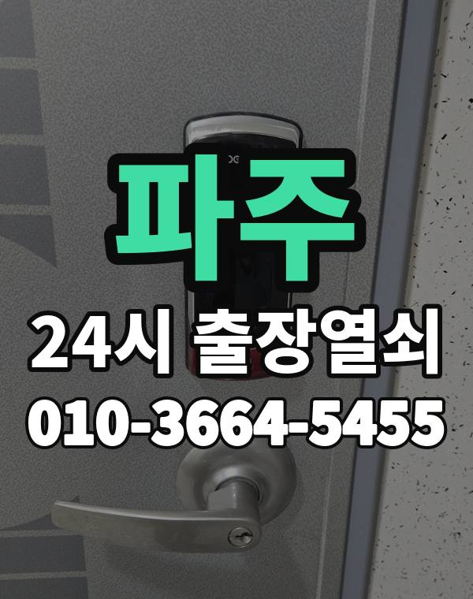

파주 출장 다니며 보는 동네
파주는 운정 신도시 아파트와 금촌, 문산 주택가, 읍면 전원주택까지 넓은 지역입니다.
운정은 새 아파트가 많고 북쪽으로 갈수록 단독주택이 많아집니다.

파주시 출장 가는 동네
- 운정동
- 금촌동
- 교하동
- 문산읍
- 조리읍
- 파주읍
- 법원읍
- 탄현면
- 월롱면
운정동 출장열쇠, 금촌동 열쇠집처럼 동네 이름으로 찾으셨어도 같은 곳입니다.
적혀 있지 않은 동네도 파주시 안이면 다 갑니다.
파주에서 맡기실 수 있는 일
파주 출장 부르실 때
운정과 문산은 거리가 있어 위치를 받고 도착 시간을 먼저 말씀드립니다.
전원주택 대문도 출동합니다.
운정역, 금촌역, 문산역, 야당역 근처라고 말씀해 주셔도 위치 잡기가 쉬워집니다.
가까운 역이나 큰 건물, 단지 이름을 같이 알려주세요.
- 주소와 건물 이름 (아파트면 동, 호수)
- 문 종류, 번호판이 켜지는지
- 사시는 걸 확인할 신분증이나 우편물이 있는지
전화부터 작업까지 순서는 이용안내에 적어 두었습니다.
파주 출장열쇠 관련 글
- 파주 법원읍 부모님 댁 도어락 점검과 어르신이 쓰기 편한 설정 방법
- 파주 금촌동 늦은 밤 귀가했는데 현관문이 안 열릴 때 대처법과 출장열쇠
- 파주 교하동 현관문 틈새 바람과 소음, 도어락이 헐거울 때 점검법
- 파주 조리읍 아이나 반려동물이 집 안에 있는데 문이 잠겼을 때 대처법
- 파주 문산읍 한밤중에 현관문이 안 열릴 때 출장열쇠 부르는 요령
- 파주 파주읍 대문과 철문 열쇠가 안 돌아갈 때 출장열쇠 부르기 전에 볼 것
- 파주 탄현면 한파에 도어락이 느리거나 꺼질 때 배터리 점검과 출장열쇠 부르는 순서
- 파주 운정동 입주 직후 도어락 비밀번호 변경과 보안 점검 순서
- 파주 월롱면 오래된 문과 문틀이 처져 현관문이 안 열릴 때 확인할 것
파주 출장열쇠 자주 묻는 질문
파주 어디까지 출장 오시나요?
운정동, 금촌동, 교하동, 문산읍, 조리읍, 파주읍 등 파주시 전 지역 갑니다. 적혀 있지 않은 동네도 파주시 안이면 출동합니다.
새벽에 파주에서 전화해도 되나요?
밤이든 새벽이든 받습니다. 어디인지 들으면 언제쯤 도착하는지 바로 말씀드립니다.
문을 못 열면 비용을 내나요?
열지 못하면 비용은 없습니다. 작업 전에 금액을 듣고 정하시면 됩니다.
본인 확인은 어떻게 하나요?
사시는 분이 맞는지만 확인되면 됩니다. 신분증이나 우편물을 준비해 주세요.
파주에서 도어락 고장도 봐주시나요?
네, 합니다. 문에 맞는 제품인지 보고, 고칠 수 있으면 수리를 먼저 권합니다.